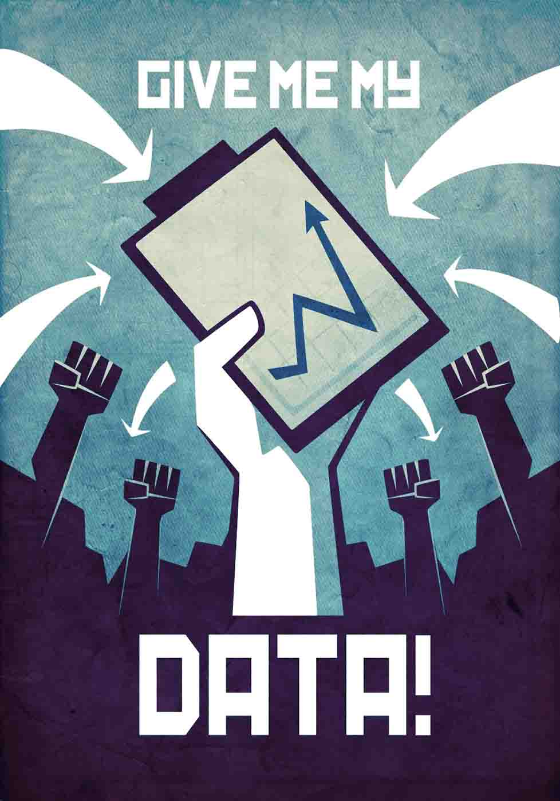

Health habits and decisions are partially based on information.
When doctors, hospitals, and labs give us easy access to our health data, we can act more knowledgeably.
Medical charts must be redesigned, on paper and online, to be fully understood. Designers can help.
It's not enough to open the file cabinet; the health care system must exploit technologies that make getting and using our data more seamless with other tasks, like goal setting, fitness tracking, and calorie budgeting.
